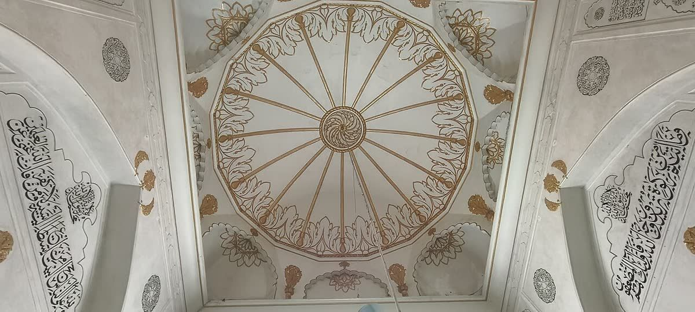

The Atheist
“His questions, as he asks them:”
Lead unit: 2 — The One Allah: Who Is Allah in Islam?Nine doorways for different backgrounds; each one leads you to the unit where your journey through the one same curriculum begins. A doorway is a layer over the one approved core: an alternative opening for its lead unit, a presentation order, bridges, and an objections file in its strongest form — the core itself does not change.
“His questions, as he asks them:”
Lead unit: 2 — The One Allah: Who Is Allah in Islam?“"Our path works: I am calmer and more compassionate than I was. Why do I need a god?"”
Lead unit: 3 — Why Did Allah Create Us? The Meaning of Life, Death, and Destiny“"In our ancient texts we already have it that God is One… so what is new with you?" (A bridge question, not a hostile one — it is to be celebrated.)”
Lead unit: 2 — The One Allah: Who Is Allah in Islam?“His questions, as he actually asks them:”
Lead unit: 4 — The Prophets and Messengers: One Chain and One Message“"We are the first monotheists; monotheism was with us two thousand years before Islam. So what do you add?"”
Lead unit: 4 — The Prophets and Messengers: One Chain and One Message“"We have known the Supreme Creator since our fathers; our intermediaries only bring us near to Him"”
Lead unit: 2 — The One Allah: Who Is Allah in Islam?“His questions, as he asks them:”
Lead unit: 3 — Why Did Allah Create Us? The Meaning of Life, Death, and Destiny“"My horoscope today said something that actually happened… coincidence?"”
Lead unit: 2 — The One Allah: Who Is Allah in Islam?“"Our religion is the oldest living monotheism; are we not the origin and you the branch?"”
Lead unit: 4 — The Prophets and Messengers: One Chain and One Message
Photo: Jama Masjid, Aligarh — Khaatir, CC BY 4.0, via Wikimedia Commons